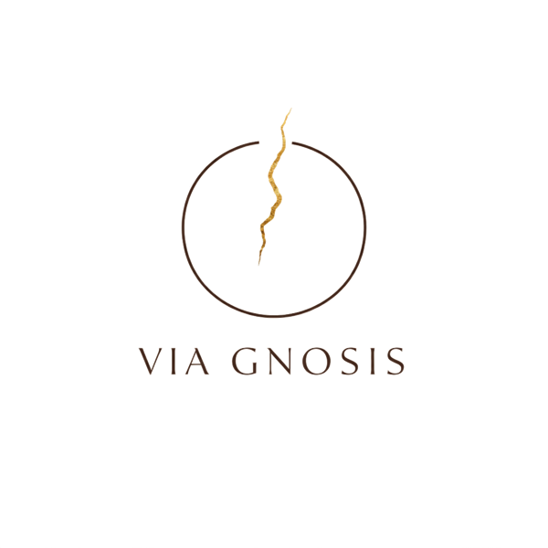

Série 1
Les liens
Les liens qui se tissent entre patients de tous âges — complicité, main tendue, regard échangé.
DécouvrirVia Gnosis
Hôpital Nord Franche-Comté — du 1er au 25 septembre 2026
Trente instants suspendus, saisis au cœur du quotidien hospitalier — des regards, des gestes, des présences qui rappellent que la lumière trouve toujours un chemin, même dans la fêlure.
« C'est par les fêlures que vient la lumière. »
Série 1
Les liens qui se tissent entre patients de tous âges — complicité, main tendue, regard échangé.
DécouvrirSérie 2
Des fragments de vie ordinaire qui persistent et rayonnent au sein de l'hôpital.
DécouvrirSérie 3
Ceux qui accompagnent, transmettent, veillent — les passeurs silencieux du soin.
DécouvrirSérie 4
Des gestes simples, répétés, qui marquent durablement une vie ou un souvenir.
DécouvrirSérie 5
Des instants de pause et de calme retrouvés au milieu du soin.
DécouvrirSérie 6
Celles et ceux qui veillent, protègent et accompagnent avec constance.
DécouvrirNous contacter

Héros du quotidien — Hôpital Nord Franche-Comté — 1er au 25 septembre 2026